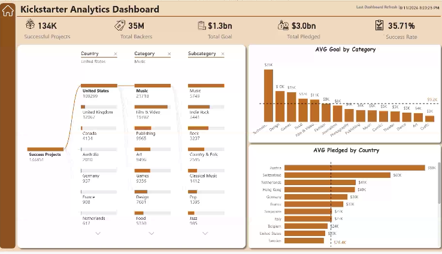

Power BI
Kickstarter Projects Analysis Dashboard
Developed an interactive Power BI dashboard to analyze successful and failed Kickstarter projects. The dashboard explores funding, backers, project outcomes, countries, categories, goals, and pledged amounts using interactive filters and visual analytics.
Analytical Focus:
- Successful vs. failed campaign outcomes & success rate metrics (35.71%)
- Backers distribution & average pledged capital per country
- Goal feasibility by project category & subcategory breakdown
Power BI
DAX
Data Visualization
Data Analysis